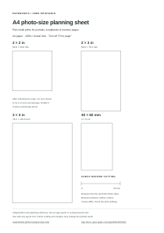

See how four small photo sizes fit your journal or scrapbook before making a layout. Print, check the scale, then cut out a blank frame to try on your page. No app, account or payment is needed.

The preview is scaled to your screen. It is not a screen-size ruler.